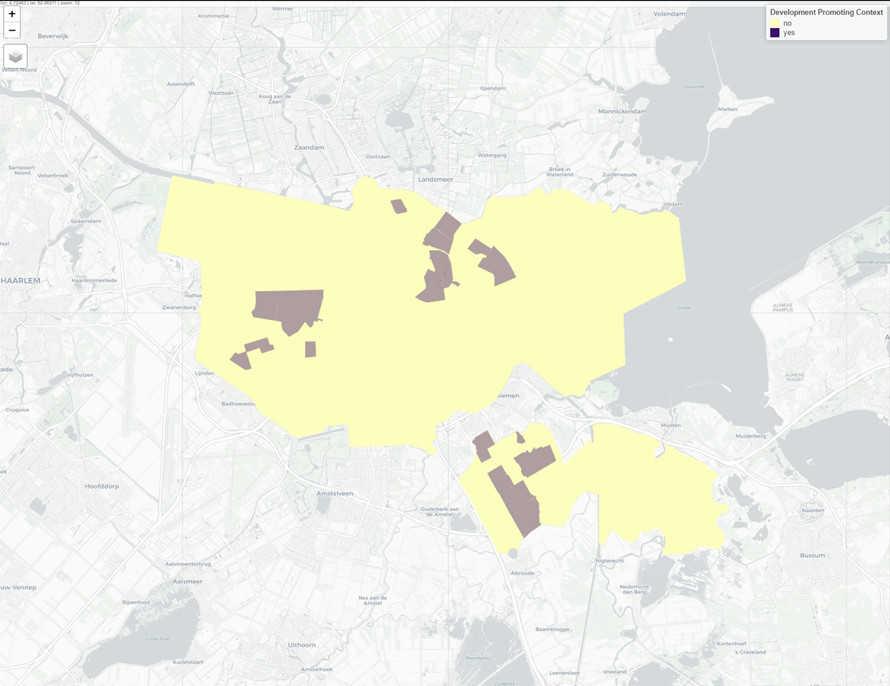

![](data:image/png;base64,iVBORw0KGgoAAAANSUhEUgAAAEAAAABACAYAAACqaXHeAAAABHNCSVQICAgIfAhkiAAAAAlwSFlz
AAAB+wAAAfsBxc2miwAAABl0RVh0U29mdHdhcmUAd3d3Lmlua3NjYXBlLm9yZ5vuPBoAAA6zSURB
VHic7ZtpeFRVmsf/5966taWqUlUJ2UioBBJiIBAwCZtog9IOgjqACsogKtqirT2ttt069nQ/zDzt
tI4+CrJIREFaFgWhBXpUNhHZQoKBkIUASchWla1S+3ar7r1nPkDaCAnZKoQP/D7mnPOe9/xy76n3
nFSAW9ziFoPFNED2LLK5wcyBDObkb8ZkxuaoSYlI6ZcOKq1eWFdedqNzGHQBk9RMEwFAASkk0Xw3
ETacDNi2vtvc7L0ROdw0AjoSotQVkKSvHQz/wRO1lScGModBFbDMaNRN1A4tUBCS3lk7BWhQkgpD
lG4852/+7DWr1R3uHAZVQDsbh6ZPN7CyxUrCzJMRouusj0ipRwD2uKm0Zn5d2dFwzX1TCGhnmdGo
G62Nna+isiUqhkzuKrkQaJlPEv5mFl2fvGg2t/VnzkEV8F5ioioOEWkLG86fvbpthynjdhXYZziQ
x1hC9J2NFyi8vCTt91Fh04KGip0AaG9zuCk2wQCVyoNU3Hjezee9bq92duzzTmxsRJoy+jEZZZYo
GTKJ6SJngdJqAfRzpze0+jHreUtPc7gpBLQnIYK6BYp/uGhw9YK688eu7v95ysgshcg9qSLMo3JC
4jqLKQFBgdKDPoQ+Pltb8dUyQLpeDjeVgI6EgLIQFT5tEl3rn2losHVsexbZ3EyT9wE1uGdkIPcy
BGxn8QUq1QrA5nqW5i2tLqvrrM9NK6AdkVIvL9E9bZL/oyfMVd/jqvc8LylzRBKDJSzIExwhQzuL
QYGQj4rHfFTc8mUdu3E7yoLtbTe9gI4EqVgVkug2i5+uXGo919ixbRog+3fTbQ8qJe4ZOYNfMoTI
OoshUNosgO60AisX15aeI2PSIp5KiFLI9ubb1vV3Qb2ltwLakUCDAkWX7/nHKRmmGIl9VgYsUhJm
2NXjKYADtM1ygne9QQDIXlk49FBstMKx66D1v4+XuQr7vqTe0VcBHQlRWiOCbmmSYe2SqtL6q5rJ
zsTb7lKx3FKOYC4DoqyS/B5bvLPxvD9Qtf6saxYLQGJErmDOdOMr/zo96km1nElr8bmPOBwI9COv
HnFPRIwmkSOv9kcAS4heRsidOkpeWBgZM+UBrTFAXNYL5Vf2ii9c1trNzpYdaoVil3WIc+wdk+gQ
noie3ecCcxt9ITcLAPWt/laGEO/9U6PmzZkenTtsSMQ8uYywJVW+grCstAvCIaAdArAsIWkRDDs/
KzLm2YcjY1Lv0UdW73HabE9n6V66cxSzfEmuJssTpKGVp+0vHq73FwL46eOjpMpbRAnNmJFrGJNu
Ukf9Yrz+3rghiumCKNXXWPhLYcjxGsIpoCMsIRoFITkW8AuyM8jC1+/QLx4bozCEJIq38+1rtpR6
V/yzb8eBlRb3fo5l783N0CWolAzJHaVNzkrTzlEp2bQ2q3TC5gn6wpnoQAmwSiGh2GitnTmVMc5O
UyfKWUKCIsU7+fZDKwqdT6DDpvkzAX4/+AMFjk0tDp5GRXLpQ2MUmhgDp5gxQT8+Y7hyPsMi8uxF
71H0oebujHALECjFKaW9Lm68n18wXp2kVzIcABytD5iXFzg+WVXkegpAsOOYziqo0OkK76GyquC3
ltZAzMhhqlSNmmWTE5T6e3IN05ITFLM4GdN0vtZ3ob8Jh1NAKXFbm5PtLU/eqTSlGjkNAJjdgn/N
aedXa0tdi7+t9G0FIF49rtMSEgAs1kDLkTPO7ebm4IUWeyh1bKomXqlgMG6kJmHcSM0clYLJ8XtR
1GTnbV3F6I5wCGikAb402npp1h1s7LQUZZSMIfALFOuL3UUrfnS8+rez7v9qcold5tilgHbO1fjK
9ubb17u9oshxzMiUBKXWqJNxd+fqb0tLVs4lILFnK71H0Ind7uiPgACVcFJlrb0tV6DzxqqTIhUM
CwDf1/rrVhTa33/3pGPxJYdQ2l2cbgVcQSosdx8uqnDtbGjh9SlDVSMNWhlnilfqZk42Th2ZpLpf
xrHec5e815zrr0dfBZSwzkZfqsv+1FS1KUknUwPARVvItfKUY+cn57yP7qv07UE3p8B2uhUwLk09
e0SCOrK+hbdYHYLjRIl71wWzv9jpEoeOHhGRrJAzyEyNiJuUqX0g2sBN5kGK6y2Blp5M3lsB9Qh4
y2Ja6x6+i0ucmKgwMATwhSjdUu49tKrQ/pvN5d53ml2CGwCmJipmKjgmyuaXzNeL2a0AkQ01Th5j
2DktO3Jyk8f9vcOBQHV94OK+fPumJmvQHxJoWkaKWq9Vs+yUsbq0zGT1I4RgeH2b5wef7+c7bl8F
eKgoHVVZa8ZPEORzR6sT1BzDUAD/d9F78e2Tzv99v8D+fLVTqAKAsbGamKey1Mt9Ann4eH3gTXTz
idWtAJ8PQWOk7NzSeQn/OTHDuEikVF1R4z8BQCy+6D1aWRfY0tTGG2OM8rRoPaeIj5ZHzJxszElN
VM8K8JS5WOfv8mzRnQAKoEhmt8gyPM4lU9SmBK1MCQBnW4KONT86v1hZ1PbwSXPw4JWussVjtH9Y
NCoiL9UoH/6PSu8jFrfY2t36erQHXLIEakMi1SydmzB31h3GGXFDFNPaK8Rme9B79Ixrd0WN+1ij
NRQ/doRmuFLBkHSTOm5GruG+pFjFdAmorG4IXH1Qua6ASniclfFtDYt+oUjKipPrCQB7QBQ2lrgP
fFzm+9XWUtcqJ3/5vDLDpJ79XHZk3u8nGZ42qlj1+ydtbxysCezrydp6ugmipNJ7WBPB5tydY0jP
HaVNzs3QzeE4ZpTbI+ZbnSFPbVOw9vsfnVvqWnirPyCNGD08IlqtYkh2hjZ5dErEQzoNm+6ykyOt
Lt5/PQEuSRRKo22VkydK+vvS1XEKlhCJAnsqvcVvH7f/ZU2R67eXbMEGAMiIV5oWZWiWvz5Fv2xG
sjqNJQRvn3Rs2lji/lNP19VjAQDgD7FHhujZB9OGqYxRkZxixgRDVlqS6uEOFaJUVu0rPFzctrnF
JqijImVp8dEKVWyUXDk92zAuMZ6bFwpBU1HrOw6AdhQgUooChb0+ItMbWJitSo5Ws3IAOGEOtL53
0vHZih9sC4vtofZ7Qu6523V/fmGcds1TY3V36pUsBwAbSlxnVh2xLfAD/IAIMDf7XYIkNmXfpp2l
18rkAJAy9HKFaIr/qULkeQQKy9zf1JgDB2uaeFNGijo5QsUyacNUUTOnGO42xSnv4oOwpDi1zYkc
efUc3I5Gk6PhyTuVKaOGyLUAYPGIoY9Pu/atL/L92+4q9wbflRJ2Trpm/jPjdBtfnqB/dIThcl8A
KG7hbRuKnb8qsQsVvVlTrwQAQMUlf3kwJI24Z4JhPMtcfng5GcH49GsrxJpGvvHIaeem2ma+KSjQ
lIwUdYyCY8j4dE1KzijNnIP2llF2wcXNnsoapw9XxsgYAl6k+KzUXbi2yP3KR2ecf6z3BFsBICdW
nvnIaG3eHybqX7vbpEqUMT+9OL4Qpe8VON7dXuFd39v19FoAABRVePbGGuXTszO0P7tu6lghUonE
llRdrhArLvmKdh9u29jcFiRRkfLUxBiFNiqSU9icoZQHo5mYBI1MBgBH6wMNb+U7Pnw337H4gi1Y
ciWs+uks3Z9fztUvfzxTm9Ne8XXkvQLHNytOOZeiD4e0PgkAIAYCYknKUNUDSXEKzdWNpnil7r4p
xqkjTarZMtk/K8TQ6Qve78qqvXurGwIJqcOUKfUWHsm8KGvxSP68YudXq4pcj39X49uOK2X142O0
Tz5/u/7TVybqH0rSya6ZBwD21/gubbrgWdDgEOx9WUhfBaC2ibcEBYm7a7x+ukrBMNcEZggyR0TE
T8zUPjikQ4VosQZbTpS4vqizBKvqmvjsqnpfzaZyx9JPiz1/bfGKdgD45XB1zoIMzYbfTdS/NClB
Gct0USiY3YL/g0LHy/uq/Ef6uo5+n0R/vyhp17Klpge763f8rMu6YU/zrn2nml+2WtH+Z+5IAAFc
2bUTdTDOSNa9+cQY7YLsOIXhevEkCvzph7a8laecz/Un/z4/Ae04XeL3UQb57IwU9ZDr9UuKVajv
nxp1+1UVIo/LjztZkKH59fO3G/JemqCfmaCRqbqbd90ZZ8FfjtkfAyD0J/9+C2h1hDwsSxvGjNDc
b4zk5NfrSwiQblLHzZhg+Jf4aPlUwpDqkQqa9nimbt1/TDH8OitGMaQnj+RJS6B1fbF7SY1TqO5v
/v0WAADl1f7zokgS7s7VT2DZ7pegUjBM7mjtiDZbcN4j0YrHH0rXpCtY0qPX0cVL0rv5jv/ZXend
0u/EESYBAFBU4T4Qa5TflZOhTe7pmKpaP8kCVUVw1+yhXfJWvn1P3hnXi33JsTN6PnP3hHZ8Z3/h
aLHzmkNPuPj7Bc/F/Q38CwjTpSwQXgE4Vmwry9tpfq/ZFgqFMy4AVDtCvi8rvMvOmv0N4YwbVgEA
sPM72/KVnzfspmH7HQGCRLG2yL1+z8XwvPcdCbsAANh+xPzstgMtxeGKt+6MK3/tacfvwhWvIwMi
oKEBtm0H7W+UVfkc/Y1V0BhoPlDr/w1w/eu1vjIgAgDg22OtX6/eYfnEz/focrZTHAFR+PSs56/7
q32nwpjazxgwAQCwcU/T62t3WL7r6/jVRa6/byp1rei+Z98ZUAEAhEPHPc8fKnTU9nbgtnOe8h0l
9hcGIqmODLQAHCy2Xti6v/XNRivf43f4fFvIteu854+VHnR7q9tfBlwAAGz+pnndB9vM26UebAe8
SLHujPOTPVW+rwY+sxskAAC2HrA8t2Vvc7ffP1r9o+vwR2dcr92InIAbKKC1FZ5tB1tf+/G8p8sv
N/9Q5zd/XR34LYCwV5JdccMEAMDBk45DH243r/X4xGvqxFa/GNpS7n6rwOwNWwHVE26oAADYurf1
zx/utOzt+DMKYM0p17YtZZ5VNzqfsB2HewG1WXE8PoZ7gOclbTIvynZf9JV+fqZtfgs/8F/Nu5rB
EIBmJ+8QRMmpU7EzGRsf2FzuePqYRbzh/zE26EwdrT10f6r6o8HOYzCJB9Dpff8tbnGLG8L/A/WE
roTBs2RqAAAAAElFTkSuQmCC)
![]()
# add geo-features
Am_Basic = gpd.GeoDataFrame(pd.DataFrame(Am_Basic))
Am_Basic1 = gpd.sjoin(Am_Basic, Am_Area, how="inner")
Am_Basic1 = Am_Basic1.rename(columns={"Gebied": "area"})
Am_Basic1 = Am_Basic1.drop(columns=['index_right'])
Am_Basic2 = gpd.sjoin(Am_Basic1, Am_District, how="inner")
Am_Basic2 = Am_Basic2.rename(columns={"Stadsdeelcode": "district"})
Am_Basic2 = Am_Basic2.drop(columns=['index_right'])
Am_Basic3 = gpd.sjoin(Am_Basic2, Am_Quarter, how="inner")
Am_Basic3 = Am_Basic3.rename(columns={"CBS_Wijkcode": "quarter"})
Am_Basic3 = Am_Basic3.drop(columns=['index_right'])
Am_Basic4 = gpd.sjoin(Am_Basic3, Am_Neighborhood, how="inner")
Am_Basic4 = Am_Basic4.rename(columns={"CBS_Buurtcode": "neighborhood"})
Am_Basic4 = Am_Basic4.drop(columns=['index_right'])
Am_Basic4 = Am_Basic4.dropna()
Am_Basic4 = Am_Basic4[(Am_Basic4['price'] < 3000) & (Am_Basic4['price'] >= 20)]
Am_geo = Am_Basic4[["geometry"]]
del Am_Basic1, Am_Basic2, Am_Basic3For the government sectors, they care more about how to improve the evaluation and the revenue to realize high-quality development, increase the standard of tourists rates to retain the profitable units, and force holders to improve the housing quality. This system provides them with multiple analysis tools like interactive real-time maps.
The validation of the models and the socio-geo-analysis across different contexts will provide a great reference for government to make policies and guide the development of local Airbnb.
In conclusion, they will have an accurate and no bias in terms of direction prediction of local Airbnb rates across different context. What’s more they will have a more accurate prediction of important contexts that will facilitate them to make policies.
Here we try the Total Rates with All model in 4 different contexts derived from government policies and spatial attributes. Those contexts have different distribution characteristics and areas. By reviewing the model performance in the context, we suggest government to consider below principles when making policies to ensure efficiency, quality, and justice.
This type of areas is what the local government want to improve specifically. The areas are clustered into 3 parts in different areas that not in the center of the city.
Am_difference = gpd.overlay(Am, Am_development, how='difference')
Am_difference['N'] = 'no'
Am_development_selected = Am_development[['geometry']].copy()
Am_development_selected['N'] = 'yes'
Am_development1 = pd.concat([Am_difference, Am_development_selected], ignore_index=True)display(Image(filename="New folder/37.png"))
joined_data = gpd.sjoin(Am_Basic_Holder_TZRate, Am_development1, how="inner", predicate="intersects")
filtered_data = joined_data[joined_data['N'].notna()]
summary = filtered_data.groupby('N').apply(lambda x: pd.Series({
'mean_MAPE': f"{x['T_APE'].mean(skipna=True):.2%}" if is_numeric_dtype(x['T_APE']) else None
})).reset_index()
summary_wide = summary.pivot(index=None, columns='N', values='mean_MAPE')
summary_wide.columns = ["Not In", "In"]
summary_wide| Not In | In | |
|---|---|---|
| 0 | 2.25% | NaN |
| 1 | NaN | 2.14% |
joined_data = gpd.sjoin(Am_Basic_Holder_TZRate, Am_development1, how="inner", predicate="intersects")
filtered_data = joined_data[joined_data['N'].notna()]
summary = filtered_data.groupby('N').apply(lambda x: pd.Series({
'mean_MPE': f"{(x['T_Error'].sum(skipna=True) / x['review_scores_rating'].sum(skipna=True)):.2%}" if is_numeric_dtype(x['T_Error']) and is_numeric_dtype(x['review_scores_rating']) else None
})).reset_index()
summary_wide = summary.pivot(index=None, columns='N', values='mean_MPE')
summary_wide.columns = ["Not In", "In"]
summary_wide| Not In | In | |
|---|---|---|
| 0 | -0.00% | NaN |
| 1 | NaN | 0.10% |
For MPE, the predicted scores are little higher both areas that are not in the development promoting areas and those are. As for the MPE, the numbers both equal to 0. So the government may over or under estimate the scores of all the units with no bias between the two contexts. When they are making policies, they should decrease their expectation a little bit to promoting the development of development promoting areas.
Here we also provide statistic tools for better understand the revenue, evaluation, and orders situation across different contexts. They can censor each area’s development situation and make policies on taxes, incentives, bonus and punishment to promote the Airbnb. Here I present evaluation and revenue analysis. They can do the same process of sub-evaluations, orders and other aspects. The policies should also fully consider the conclusion from the 5.1 part. All the analysis here should be in real-time. And they shouldn’t only denpend on only one aspect of analysis but should considerating all analysis and their expectaion to strike a balance.
Am_poor_difference = gpd.overlay(Am, Am_poor[['geometry']], how='difference')
Am_poor_difference['N'] = 'no'
Am_poor_selected = Am_poor[['geometry']].copy()
Am_poor_selected['N'] = 'yes'
Am_poor1 = pd.concat([Am_poor_difference, Am_poor_selected], ignore_index=True)
Am_protect_difference = gpd.overlay(Am, Am_protect[['geometry']], how='difference')
Am_protect_difference['N'] = 'no'
Am_protect_selected = Am_protect[['geometry']].copy()
Am_protect_selected['N'] = 'yes'
Am_protect1 = pd.concat([Am_protect_difference, Am_protect_selected], ignore_index=True)
Am_shopping_difference = gpd.overlay(Am, Am_shopping[['geometry']], how='difference')
Am_shopping_difference['N'] = 'no'
Am_shopping_selected = Am_shopping[['geometry']].copy()
Am_shopping_selected['N'] = 'yes'
Am_shopping1 = pd.concat([Am_shopping_difference, Am_shopping_selected], ignore_index=True) Evaluation_Development = gpd.sjoin(Am_Basic_Holder_TZRate, Am_development1, how="inner", predicate='intersects')
Evaluation_Development = Evaluation_Development[Evaluation_Development['N'].notna()]
Evaluation_Development = (
Evaluation_Development.groupby('N')['review_scores_rating']
.mean()
.reset_index(name='mean.Evaluation')
)
Evaluation_Development = Evaluation_Development.drop(columns=['geometry'], errors='ignore')
Evaluation_Development = Evaluation_Development.pivot(index=None, columns='N', values='mean.Evaluation')
Evaluation_Development['context'] = "Development Promoting"
Evaluation_Protect = gpd.sjoin(Am_Basic_Holder_TZRate, Am_protect1, how="inner", predicate='intersects')
Evaluation_Protect = Evaluation_Protect[Evaluation_Protect['N'].notna()]
Evaluation_Protect = (
Evaluation_Protect.groupby('N')['review_scores_rating']
.apply(lambda x: x.dropna().mean())
.reset_index(name='mean.Evaluation')
)
Evaluation_Protect = Evaluation_Protect.drop(columns=['geometry'], errors='ignore')
Evaluation_Protect = Evaluation_Protect.pivot(index=None, columns='N', values='mean.Evaluation')
Evaluation_Protect['context'] = "Historic Protect"
Evaluation_Poor = gpd.sjoin(Am_Basic_Holder_TZRate, Am_poor1, how="inner", predicate='intersects')
Evaluation_Poor = Evaluation_Poor[Evaluation_Poor['N'].notna()]
Evaluation_Poor = (
Evaluation_Poor.groupby('N')['review_scores_rating']
.apply(lambda x: x.dropna().mean())
.reset_index(name='mean.Evaluation')
)
Evaluation_Poor = Evaluation_Poor.drop(columns=['geometry'], errors='ignore')
Evaluation_Poor = Evaluation_Poor.pivot(index=None, columns='N', values='mean.Evaluation')
Evaluation_Poor['context'] = "Poor"
Evaluation_Shopping = gpd.sjoin(Am_Basic_Holder_TZRate, Am_shopping1, how="inner", predicate='intersects')
Evaluation_Shopping = Evaluation_Shopping[Evaluation_Shopping['N'].notna()]
Evaluation_Shopping = (
Evaluation_Shopping.groupby('N')['review_scores_rating']
.apply(lambda x: x.dropna().mean())
.reset_index(name='mean.Evaluation')
)
Evaluation_Shopping = Evaluation_Shopping.drop(columns=['geometry'], errors='ignore')
Evaluation_Shopping = Evaluation_Shopping.pivot(index=None, columns='N', values='mean.Evaluation')
Evaluation_Shopping['context'] = "Shopping"combined_evaluations = pd.concat([
Evaluation_Development,
Evaluation_Protect,
Evaluation_Poor,
Evaluation_Shopping
], ignore_index=True)
combined_evaluations| N | no | yes | context |
|---|---|---|---|
| 0 | 95.098490 | NaN | Development Promoting |
| 1 | NaN | 94.362275 | Development Promoting |
| 2 | 95.242712 | NaN | Historic Protect |
| 3 | NaN | 94.897585 | Historic Protect |
| 4 | 95.224118 | NaN | Poor |
| 5 | NaN | 94.457464 | Poor |
| 6 | 95.106779 | NaN | Shopping |
| 7 | NaN | 94.705590 | Shopping |
As for the evaluation, no development promoting areas perform much better than development promoting areas, which prove that those areas still need Airbnb improvement especially their quality. Government should set high-evaluation incentives for them to promote their quality. There basically not difference between the two historic contexts, to improve their characteristics, the government should improve the standard for historic protecting areas and review the sub-evaluation as the same process to put up with more punishments for specific sub-evaluations to improve the characteristics. The poor areas perform worse a little bit than the not poor ares, government should set standard for Airbnb housing units in poor areas while get their bonus to promote their development. Shopping areas perform a little bit worse than areas that are not. High standard is also applicable for those areas.
Government can apply the same analysis process on sub-evaluations to put up with detailed requirements.